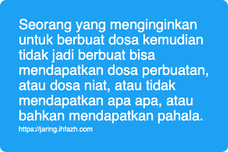

Tekad Untuk Berbuat Dosa dan Tidak Jadi Berbuat
Seorang yang menginginkan untuk berbuat dosa kemudian tidak jadi berbuat bisa mendapatkan dosa perbuatan, atau dosa niat, atau tidak mendapatkan apa apa, atau bahkan mendapatkan pahala.
Mendapatkan dosa perbuatan adalah ketika sudah bertekad dan dia sudah melakukan sebabnya. Namun, Alloh berkehendak lain. Sehingga perbuatan itu tidak jadi sempurna, atau bahkan tidak terealisasi sama sekali. Ini seperti yang Rosululloh shollallohu 'alaihi wasallam sebutkan tentang 2 orang muslim yang saling bertengkar dan sampai membunuh, kedua duanya berada di dalam neraka.
Contoh lain: Seorang sudah bertekad untuk melakukan perzinahan. Dia sudah merencanakan sematang-matangnya agar perbuatan tersebut tidak ada yang mengetahui. Namun ternyata tempat yang direncanakan untuk perbuatan tersebut terbakar. Orang ini sudah mendapatkan dosa perbuatannya.
Semoga Alloh selamatkan kita, kaum muslimin dari perbuatan keji ini dan dosa dosa yang lainnya.
Mendapatkan dosa niat adalah ketika sudah bertekad, atau lebih pas-nya berangan-angan untuk melakukan perbuatan dosa ketika memiliki kemampuan seperti orang yang melakukan perbuatan dosa tersebut. Ini seperti dalam hadits ketika Rosululloh shollallohu alaihi wasallam membagi orang menjadi 4, diantaranya orang yang punya harta dan menggunakan hartanya di tempat tempat maksiat, kemudian ada orang lain yang tidak memiliki harta tapi dia ingin menjadi seperti orang tersebut dan melakukan perbuatan yang sama. Rosululloh shollallohu alaihi wasallam bilang: Kedua duanya dalam hal dosa sama saja.
Contoh lain: A memiliki kedudukan sehingga dengan mudah mlokoto-i orang lain, memeras orang lain. B adalah orang yang tidak punya kemampuan tersebut. B berangan angan kalau saja saya memiliki kedudukan dan kemampuan seperti si A, maka aku sudah memeras si C-misalnya.
Tidak mendapatkan dosa tidak pula pahala adalah ketika dia sempat bertekad, kemudian tidak jadi. Bukan karena apa apa. Karena malas misalnya. Ngantuk, mending tidur. Maka tidak dosa dan tidak pula pahala.
Mendapatkan pahala adalah ketika seorang sudah punya tekad untuk melakukan suatu dosa, kemudian dia tinggalkan dosa tersebut karena takut kepada Alloh. Ini seperti dalam hadits tentang 3 orang yang terjebak di dalam goa salah seorang dari mereka meninggalkan pemerkosaan karena takut kepada Alloh. Dan seperti dalam hadits bahwa barang siapa yang menginginkan untuk melakukan suatu kejelekan dan dia tidak melakukannya, maka dia akan mendapatkan satu kebaikan.
Semoga Alloh lindungi kita semua dari perbuatan dosa dan menuntun kita untuk meninggalkannya karena takut kepadaNya.